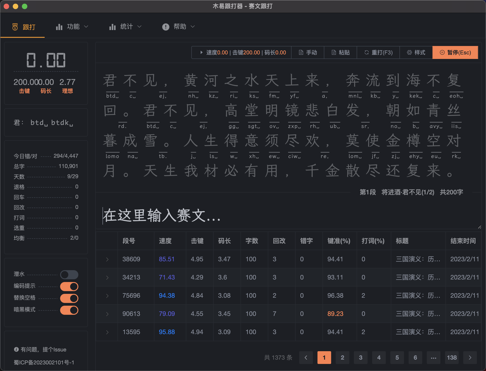

<!DOCTYPE html><html lang="zh-CN" class=""><head><meta charset="UTF-8"><meta http-equiv="X-UA-Compatible" content="IE=edge"><meta name="description" content="木易跟打器也叫mac跟打器或qq跟打器，是由木易打造的当前macOS平台唯一的、可直接载文的跟打器。可通过macQQ直接群载文，计算跟打指标最终发送成绩至QQ群里，具有复合指标、数据可视化、轻便、准确、快捷等特点。"><meta name="keywords" content="木易跟打器, mac跟打器, 虎码练习, 跟打器, QQ跟打器, mac打字练习, 木易跟打器官网, macOS平台可直接载文的跟打器, 木易, owenyang"><meta name="viewport" content="width=device-width,initial-scale=1,user-scalable=no"><meta name="google-site-verification" content="qGjU7k5aa75N9-3Z6ygrxD_CTt28TLrDR1FN0bhreDo"><!--[if IE]><link rel="icon" href="/favicon.ico"><![endif]--><title>关于 - 木易跟打器</title><script src="https://hm.baidu.com/hm.js?1059d316d5f6d915425c909347d1b752"></script><script>var _hmt = _hmt || [];
      (function() {
        var hm = document.createElement("script");
        hm.src = "https://hm.baidu.com/hm.js?1059d316d5f6d915425c909347d1b752";
        var s = document.getElementsByTagName("script")[0]; 
        s.parentNode.insertBefore(hm, s);
      })();</script><link href="/css/about.97d75575.css" rel="prefetch"><link href="/css/kata.abbe4c21.css" rel="prefetch"><link href="/css/practice.691b3b29.css" rel="prefetch"><link href="/css/setting.ff2f260c.css" rel="prefetch"><link href="/js/about.74ae7a18.js" rel="prefetch"><link href="/js/about~changelog~help.42f13bb9.js" rel="prefetch"><link href="/js/about~summary.d5e7c452.js" rel="prefetch"><link href="/js/changelog.f4bc98e7.js" rel="prefetch"><link href="/js/help.82ebc1a0.js" rel="prefetch"><link href="/js/kata.d05b2121.js" rel="prefetch"><link href="/js/practice.2a7641e2.js" rel="prefetch"><link href="/js/setting.b66204dd.js" rel="prefetch"><link href="/js/summary.96d5ec8c.js" rel="prefetch"><link href="/css/app.b45b39e8.css" rel="preload" as="style"><link href="/css/chunk-vendors.cc5f3adf.css" rel="preload" as="style"><link href="/js/app.b27cbfc0.js" rel="preload" as="script"><link href="/js/chunk-vendors.b1dc8e06.js" rel="preload" as="script"><link href="/css/chunk-vendors.cc5f3adf.css" rel="stylesheet"><link href="/css/app.b45b39e8.css" rel="stylesheet"><link rel="icon" type="image/png" sizes="32x32" href="/img/icons/favicon-32x32.png?v=26.1"><link rel="icon" type="image/png" sizes="16x16" href="/img/icons/favicon-16x16.png?v=26.1"><link rel="manifest" href="/manifest.json?v=26.1"><meta name="theme-color" content="#1c1f24"><meta name="apple-mobile-web-app-capable" content="yes"><meta name="apple-mobile-web-app-status-bar-style" content="default"><meta name="apple-mobile-web-app-title" content="木易跟打器"><link rel="apple-touch-icon" href="/img/icons/apple-touch-icon-180x180.png?v=26.1"><meta name="msapplication-TileImage" content="/img/icons/msapplication-icon-144x144.png?v=26.1"><meta name="msapplication-TileColor" content="#1c1f24"><script charset="utf-8" src="/js/about~changelog~help.42f13bb9.js"></script><script charset="utf-8" src="/js/about~summary.d5e7c452.js"></script><link rel="stylesheet" type="text/css" href="/css/about.97d75575.css"><script charset="utf-8" src="/js/about.74ae7a18.js"></script></head><body><noscript><strong>We're sorry but 木易跟打器 doesn't work properly without JavaScript enabled. Please enable it to continue.</strong></noscript><div data-v-2ba83a6d="" id="app"><div data-v-2ba83a6d="" role="progressbar" aria-valuenow="0" aria-valuemin="0" aria-valuemax="100" class="el-progress el-progress--line el-progress--without-text"><div class="el-progress-bar"><div class="el-progress-bar__outer" style="height: 4px; background-color: transparent;"><div class="el-progress-bar__inner" style="width: 0%; background-color: rgb(245, 108, 108);"><!----></div></div></div><!----></div><div data-v-2ba83a6d="" class="menu-row el-row"><div data-v-2ba83a6d="" class="menu-col el-col el-col-24"><ul data-v-2ba83a6d="" role="menubar" class="el-menu--horizontal el-menu"><li data-v-2ba83a6d="" role="menuitem" tabindex="0" class="el-menu-item" style="border-bottom-color: transparent;"><i data-v-2ba83a6d="" class="el-icon-s-promotion"></i><span data-v-2ba83a6d="">门户</span></li><li data-v-2ba83a6d="" role="menuitem" tabindex="0" class="el-menu-item" style="border-bottom-color: transparent;"><i data-v-2ba83a6d="" class="el-icon-medal-1"></i><span data-v-2ba83a6d="">跟打</span></li><li data-v-2ba83a6d="" role="menuitem" aria-haspopup="true" class="el-submenu" tabindex="0"><div class="el-submenu__title" style="border-bottom-color: transparent;"><i data-v-2ba83a6d="" class="el-icon-date"></i>功能<i class="el-submenu__icon-arrow el-icon-arrow-down"></i></div><div class="el-menu--horizontal" style="display: none;"><ul role="menu" class="el-menu el-menu--popup el-menu--popup-bottom-start"><li data-v-2ba83a6d="" role="menuitem" tabindex="-1" class="el-menu-item"><i data-v-2ba83a6d="" class="el-icon-date"></i><span data-v-2ba83a6d="">发文（F2）</span></li><li data-v-2ba83a6d="" role="menuitem" tabindex="-1" class="el-menu-item"><i data-v-2ba83a6d="" class="el-icon-document"></i><span data-v-2ba83a6d="">阅读</span></li><li data-v-2ba83a6d="" role="menuitem" tabindex="-1" class="el-menu-item"><i data-v-2ba83a6d="" class="el-icon-aim"></i><span data-v-2ba83a6d="">词库练习</span></li><li data-v-2ba83a6d="" role="menuitem" tabindex="-1" class="el-menu-item"><i data-v-2ba83a6d="" class="el-icon-edit-outline"></i><span data-v-2ba83a6d="">乱序（Ctrl+L）</span></li><li data-v-2ba83a6d="" role="menuitem" tabindex="-1" class="el-menu-item"><i data-v-2ba83a6d="" class="el-icon-d-arrow-right"></i><span data-v-2ba83a6d="">下一段（Ctrl+P）</span></li><li data-v-2ba83a6d="" role="menuitem" tabindex="-1" class="el-menu-item"><i data-v-2ba83a6d="" class="el-icon-setting"></i><span data-v-2ba83a6d="">设置</span></li></ul></div></li><li data-v-2ba83a6d="" role="menuitem" aria-haspopup="true" class="el-submenu" tabindex="0"><div class="el-submenu__title" style="border-bottom-color: transparent;"><i data-v-2ba83a6d="" class="el-icon-s-data"></i>统计<i class="el-submenu__icon-arrow el-icon-arrow-down"></i></div><div class="el-menu--horizontal" style="display: none;"><ul role="menu" class="el-menu el-menu--popup el-menu--popup-bottom-start"><li data-v-2ba83a6d="" role="menuitem" tabindex="-1" class="el-menu-item"><i data-v-2ba83a6d="" class="el-icon-data-line"></i><span data-v-2ba83a6d="">跟打历史</span></li><li data-v-2ba83a6d="" role="menuitem" tabindex="-1" class="el-menu-item"><i data-v-2ba83a6d="" class="el-icon-s-data"></i><span data-v-2ba83a6d="">键盘统计</span></li></ul></div></li><li data-v-2ba83a6d="" role="menuitem" aria-haspopup="true" class="el-submenu is-active" tabindex="0"><div class="el-submenu__title" style="border-bottom-color: rgb(235, 144, 16); color: rgb(235, 144, 16);"><i data-v-2ba83a6d="" class="el-icon-warning"></i>帮助<i class="el-submenu__icon-arrow el-icon-arrow-down"></i></div><div class="el-menu--horizontal" style="display: none;"><ul role="menu" class="el-menu el-menu--popup el-menu--popup-bottom-start"><li data-v-2ba83a6d="" role="menuitem" tabindex="-1" class="el-menu-item"><i data-v-2ba83a6d="" class="el-icon-question"></i><span data-v-2ba83a6d="">使用帮助</span></li><li data-v-2ba83a6d="" role="menuitem" tabindex="-1" class="el-menu-item"><i data-v-2ba83a6d="" class="el-icon-time"></i><span data-v-2ba83a6d="">版本记录</span></li><li data-v-2ba83a6d="" role="menuitem" tabindex="-1" class="el-menu-item"><i data-v-2ba83a6d="" class="el-icon-download"></i><span data-v-2ba83a6d="">程序下载</span></li><li data-v-2ba83a6d="" role="menuitem" tabindex="-1" class="el-menu-item is-active" style="color: rgb(235, 144, 16);"><i data-v-2ba83a6d="" class="el-icon-warning"></i><span data-v-2ba83a6d="">关于</span></li></ul></div></li><li data-v-2ba83a6d="" role="menuitem" tabindex="0" class="el-menu-item" style="border-bottom-color: transparent;"><i data-v-2ba83a6d="" class="el-icon-star-on"></i><span data-v-2ba83a6d="">虎码官网</span></li></ul></div></div><div data-v-2ba83a6d="" class="content-row el-row"><div data-v-2ba83a6d="" class="el-col el-col-24"><div data-v-2ba83a6d="" class="markdown-body"><p></p>
<h1 id="web29">木易跟打器-web(29)</h1>
<p><strong>木易跟打器</strong>也叫 <code>mac跟打器</code> 或 <code>qq跟打器</code>，是由木易打造的当前macOS平台<strong>唯一的</strong>、可<strong>直接载文</strong>的跟打器。可通过macQQ直接群载文，计算跟打指标最终发送成绩至QQ群里，具有发文<code>复合指标</code>、历史数据<code>可视化</code>、轻便、准确、快捷等特点。</p>
<p>如未下载<code>mac客户端</code>也可直接通过网页访问进行本地练习，支持<code>击键</code>、<code>键准</code>等复合指标；根据字频提供前3500的单字练习文本，也可直接自定义练习文本，让打字练习如虎添翼。更多功能等你来发现！</p>
<blockquote>
  <p>该工具是在笔者学习虎码(性能最优的形码)的过程中，开发并完善的。并为其提供了虎码学习者的专用练习文本。</p>
</blockquote>
<h2 id="">一、关于项目</h2>
<p>本人是个五笔爱好者，也一直在使用五笔，曾经(差不多10年前)也做过Windows平台的跟打器<a href="https://github.com/owenyang0/FollowTyperAndSender">易跟打Windows版</a>。</p>
<p>从 <code>Windows</code> 转到 <code>Mac</code> 之后，苦于<code>macOS</code>没有可用的跟打器，偶然看到了<a href="https://gitee.com/hotleave/quick-typing">QT</a>，基于他的代码做一个<code>macOS</code>上可直接载文用的跟打器，处理了一些macOS系统的兼容，于是便有了这个项目。</p>
<p>

</p>
<h2 id="-1">二、主要功能</h2>
<table>
<thead>
<tr>
<th>功能</th>
<th>mac客户端</th>
<th>网页版</th>
</tr>
</thead>
<tbody>
<tr>
<td>QQ群直接载文(F4)</td>
<td>✅</td>
<td>❌</td>
</tr>
<tr>
<td>潜水模式</td>
<td>✅</td>
<td>不适用</td>
</tr>
<tr>
<td>赛文跟打</td>
<td>✅</td>
<td>✅</td>
</tr>
<tr>
<td>词库练习</td>
<td>✅</td>
<td>✅</td>
</tr>
<tr>
<td>发文练习(F2复合指标击键、键准 )</td>
<td>✅</td>
<td>✅</td>
</tr>
<tr>
<td>发文练习(常用单字字频排序)</td>
<td>✅</td>
<td>✅</td>
</tr>
<tr>
<td>成绩发送</td>
<td>✅</td>
<td>✅</td>
</tr>
<tr>
<td>历史记录(所有数据)</td>
<td>✅</td>
<td>✅</td>
</tr>
<tr>
<td>数据可视化</td>
<td>✅</td>
<td>✅</td>
</tr>
<tr>
<td>按键统计(热力图)</td>
<td>✅</td>
<td>✅</td>
</tr>
<tr>
<td>词提上传(86、091、虎码等无限制)</td>
<td>✅</td>
<td>✅</td>
</tr>
<tr>
<td>主题切换(暗黑模式)</td>
<td>✅</td>
<td>✅</td>
</tr>
</tbody>
</table>
<h2 id="contributing">三、Contributing</h2>
<ul>
<li>有问题，提个<a href="https://github.com/owenyang0/easy-typer/issues">Issue</a></li>
<li>有想法，提个<a href="https://github.com/owenyang0/easy-typer/issues">Issue</a></li>
<li>或通过QQ群联系我：<strong>木易跟打器</strong> <code>787343469</code></li>
<li>有能力，提个<a href="https://github.com/owenyang0/easy-typer/pulls">PR</a></li>
</ul>
<h2 id="-2">四、声明</h2>
<ol>
<li>本程序系私人用途，非商业产品，即不提供相应的服务</li>
<li>本程序所有数据均保存在用户浏览器的<a href="https://developer.mozilla.org/zh-CN/docs/Web/API/IndexedDB_API">IndexedDB</a>中，<strong>不会上传到任何服务器</strong></li>
<li>如果有侵权行为，请联系：<code>songallica@gmail.com</code>，会在看到后第一时间取消</li>
<li>用户使用本程序所引发的一切问题，由用户自己承担，本程序概不负责</li>
<li><strong>使用本程序则旨在接受本条及以上条款</strong></li>
</ol>
<h2 id="-3">五、操作说明</h2>
<h3 id="51">5.1 快捷键</h3>
<ul>
<li><code>F4</code>：激活QQ聊天窗口，从当前鼠标位置载文（确保鼠标在需要载文的消息上面）</li>
<li><code>Ctrl</code> + <code>v</code>：从剪切板载文（Mac下为<code>Cmd</code> + <code>v</code>，与粘贴快捷键一致）</li>
<li><code>F3</code>：重打</li>
<li><code>Esc</code>：暂停</li>
<li><code>Enter</code>: 继续</li>
</ul>
<h3 id="52">5.2 载文</h3>
<p>由于QQ macOS版本的限制，无法全文获取。可将鼠标移至聊天窗口对应消息位置，按<code>F4</code>载入文本。</p>
<ol>
<li>『赛文文字』从QQ群使用指令获取赛文，然后鼠标移至赛文外，按<code>F4</code>即可</li>
<li>『自由文本』将要打的文本复制到剪切板，然后到主页粘贴即可</li>
</ol>
<h3 id="53">5.3 打文</h3>
<blockquote>
  <p>载文后，下方的输入框自动获取焦点，当按下任<strong>意键</strong>时，开始计时。</p>
  <p>打文过程中可以使用<code>Esc</code>暂停。暂停后，使用<code>Enter</code>继续，按下<code>Enter</code>后，输入框自动获取焦点，并立即继续计时。</p>
  <p>如果打的过程中，或完成后，对结果不满意，可以按<code>F3</code>重新开始。计时会清零，并等待第一个键按下后，再次开始计时。</p>
  <p>如果赛文较长，而对照文本区域无法完全显示，那么在打文过程中，对照文本会自动根据输入进度移动滚动条，方便跟打。</p>
  <p>如果在打文时输入错误的字词，会以指定颜色的背景（默认是红色）显示。</p>
  <p>跟打时，必须将赛文<strong>全部输入正确</strong>才会停止计时，如果发现打完最后一个字时，并没有提示完成，计时还在继续，则需要到对照文本中查找被标成错误背景的字词并加以修正，直至全部正确。</p>
</blockquote>
<h4 id="-4">词语提示</h4>
<blockquote>
  <p>程序提供词语提示功能，方便前期掌握词库中的词语。</p>
  <p>在词语提示功能打开时，程序会将赛文中的词语去词库中匹配，并计算出<strong>码长最短</strong>的一个组合，这个码长就是理论码长。</p>
  <p>开始输入后，如果没按词语提示的内容输入，那么提示的内容会同时进行调整，提示从当前位置开始的码长最短的组合。</p>
</blockquote>
<p>基础的词语提示以间隔加粗的方式展示，如：“这个<strong>码长</strong>短”。在此基础上，还提供：</p>
<ul>
<li>码长提示：用不同的颜色（不是背景颜色）来区分1，2，3，4码的字词。</li>
<li>选重提示：在需要选重的字词下方增加下划线，并在下划线下方显示选重键。如果某个字词不需要选重，则下方什么都不显示。</li>
<li>编码提示：在字词下方显示该字词的编码（不含选重键）。除了该方式外，界面右上角也有编码及选重键的提示。</li>
<li>标点顶屏：在可以使用标点顶屏的字词下显示顶屏提示（默认是“顶”字），如果某个首选字词后是标点，则可以利用标点直接将首选上屏，这样可以减少1码。</li>
</ul>
<p><strong><em>词语提示需要上传码表后才可以使用，具体见设置中的相关内容</em></strong></p>
<h3 id="54">5.4 发送成绩</h3>
<p>跟打结束后，成绩会<strong>自动</strong>发送至QQ群当前激活的窗口并发送，并复制到系统剪切板</p>
<p>如不想自动发送成绩，可在左侧开启 <strong><code>潜水</code></strong> 模式</p>
<h3 id="55">5.5 查看理想编码</h3>
<p>程序能根据词库中的词条计算出理想码长，也可以计算出该码长对应的编码。点击左侧面板中的<code>理想</code>二字，即可查看理想编码对应的编码。</p>
<h3 id="56">5.6 查看录入的编码</h3>
<p>程序会记录打文过程中按下的每一个按键，点击左侧面板中的<code>码长</code>二字，即可查看打文过程中按下的所有按键。</p>
<h2 id="-5">六、设置</h2>
<blockquote>
  <p>设置中的变更，除了上传码表文件会自动保存外，其余的变动均需手动点击下方的”保存按钮进行保存</p>
</blockquote>
<ul>
<li><code>保存</code>: 将变更写入数据库</li>
<li><code>重置</code>：恢复设置到数据库中的状态</li>
<li><code>恢复默认</code>: 将所有设置恢复到默认状态</li>
</ul>
<h3 id="61">6.1 基础设置</h3>
<ul>
<li><code>自动重新开始</code>：当删除输入的所有文字后自动重新开始</li>
<li><code>结束条件</code>: 赛文结束的条件，默认为赛文中所有的字及标点都正确时结束。<code>打完</code>则比较赛文和输入的长度，一致就认为结束。但在结束时如果输入的内容中有错字，则每错一个字罚5个字，会导致速度降低</li>
</ul>
<h3 id="62">6.2 词提设置</h3>
<ul>
<li><code>词语提示</code>: 总开关，关闭时不会进行词语提示，默认关闭</li>
<li><code>码表文件</code>: 输入法使用的码表文件，文件使用<code>多多格式</code>，<code>UTF-8</code>编码，如：</li>
</ul>
<pre><code class="tsv language-tsv">  五  pf
  五笔    pfr
  笔  rkq
</code></pre>
<ul>
<li><code>提示选项</code>：选择提示内容，<code>词语</code>是必选的。</li>
<li><code>候选词条数</code>: 输入法每页候选词条数，对于需要翻页的字词，会的选重提示上增加<code>翻页键</code>。默认：9</li>
<li><code>最大候选词位置</code>：为避免某些生僻词位置过去靠后，可以通过设置该值，将位置过于靠后的词略掉，拆成位置更靠前一些的短词或单字。该设置可能会影响码长。默认：0</li>
<li><code>翻页键</code>：指定的词条位置比较靠后，需要翻页才能选择时，会在选重码提示上增加该符号。只需要指定提示的符号，方便自己识别，即使输入法设置了多组翻页键。默认：+</li>
<li><code>选重键</code>：提示时展示的选重键。每个字符表示一个选重键，字符数不得少于<code>候选词条数</code>。默认：<code>␣23456789</code></li>
<li><code>选重键文本</code>：选重键对应的文本，当这些字符出现在字词后面时，<strong>必须</strong>手动选择词条。默认：<code>234567890;+'＋；’</code></li>
<li><code>标点顶屏提示</code>: 顶屏提示符号</li>
<li><code>四码唯一自动上屏</code>：如题</li>
<li><code>第五码首选上屏</code>：如题</li>
</ul>
<h3 id="63">6.3 成绩设置</h3>
<ul>
<li>标识：赛文标识，如<code>第999段</code></li>
<li>速度：每分钟输入的字数，数值越大说明打字的速度越快</li>
<li>击键：每秒钟敲击按键的次数</li>
<li>码长：平均每个字（含标点符号）所需要的按键次数</li>
<li>理想码长：程序计算出的最短码长</li>
<li>字数：文章总字数</li>
<li>错字：结束时输入的错字数</li>
<li>用时：总时间，单位秒</li>
<li>暂停：打文时暂停的次数和总暂停时长</li>
<li>键准：按键准确率，退格数及回改数作为失误按键来源，算法：<code>(总按键数 - 退格数 - 回改数 * 平均码长) / 总按键数</code></li>
<li>键法：左手与右手按键数的均衡性，算法：<code>(1 - abs(左 - 右) / (左 + 右)) * 100</code></li>
<li>左：左手按键次数</li>
<li>右：右手按键次数</li>
<li>打词：有多少字是通过词组的方式输入的</li>
<li>打词率：打词数占总字数的比率</li>
<li>选重：要输入的字词不在首选位置的次数</li>
<li>回改：输入错误被删除的字数</li>
<li>键数：总按键次数</li>
<li>退格：退格键被按次数</li>
<li>回车：回车键被按次数</li>
<li>重打：重新打的次数</li>
<li>版本：版本信息</li>
<li>输入法：所使用的输入法名称</li>
<li>个性签名：想立的Flag</li>
</ul>
<h3 id="64">6.4 标点设置</h3>
<p>标点用于：</p>
<ul>
<li>顶屏计算：仅用于顶屏计算，不将标点加入码表</li>
<li>码表及顶屏计算：将标点加入码表，防止码表中的标点码长过长</li>
</ul>
<blockquote>
  <p>如果需要将标点加入码表，则需要重新导入词库文件</p>
</blockquote>
<h3 id="65">6.5 载文设置</h3>
<ul>
<li><code>去除空格</code>: 移除文章中的所有空白字符，包括：空格、回车、换行、制表符等</li>
</ul></div></div></div></div><script src="/js/chunk-vendors.b1dc8e06.js"></script><script src="/js/app.b27cbfc0.js"></script></body></html>